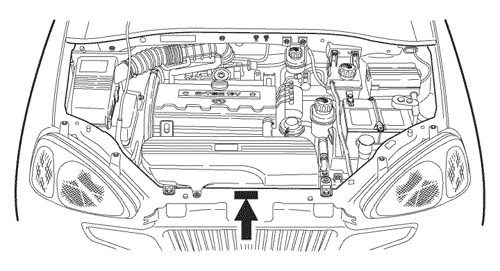
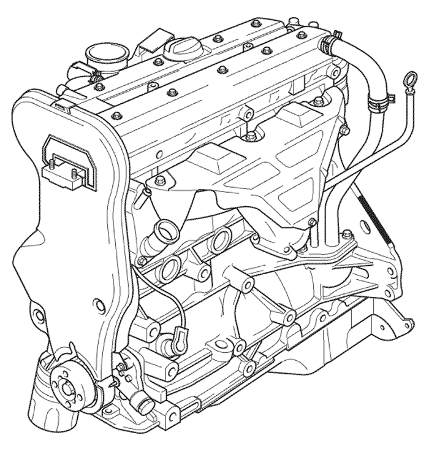

SECCIÓN 1
INTRODUCCIÓN GENERAL
1. EQUIPO Y MATERIAL PARA LA INSPECCIÓN DE PRE-ENTREGA Y EL SERVICIO
Deberán prepararse las siguientes herramientas y líquidos para el proceso de inspección de pre-entrega y su servicio.
HERRAMIENTAS
- Calibrador de presión de neumáticos
- Inflador de neumáticos
- Mazo de goma (para cubierta de rueda)
- Llave dinamométrica (para el apriete de tuercas de pestaña de ruedas)
- Llaves de 8-21 mm
- Destornillador pequeño de hoja plana
- Destornillador (+)
- Alicates
- Cinta adhesiva de casete (para la inspección de la operación del casete)
- Comprobador de orientación de faros
- Tacómetro con unidad de lectura de impulsos
- Toallas
LÍQUIDOS
- Fluido de freno/embrague
- Aceite de motor
- Líquido de transmisión manual
- Líquido de transmisión automática
- Líquido de servodirección
- Refrigerante de motor
- Líquido de lavaparabrisas
- Lubricante(s) de pulverización
2. IMPRESO DE INSPECCIÓN DE PRE-ENTREGA
- Como se puede apreciar en las siguientes páginas, debe prepararse el impreso de inspección de pre-entrega y especificarse en el impreso de control los procedimientos de inspección, control, servicios relacionados y actuaciones de rectificación.
- Antes de realizar la inspección de pre-entrega, la columna superior de la primera página del formulario de inspección de pre-entrega (PDI) deberá completarse como sigue:
- - El modelo del vehículo, el número de identificación del vehículo y el código de color de la carrocería están impresos en la placa del número de identificación del vehículo (VIN) fijada en la parte superior del travesaño, encima del radiador.



- El número de motor está impreso en el bloque de cilindros, debajo del colector de escape nº4 del motor.

- - Rellene los demás espacios vacíos de la columna, por ejemplo: número de registro de concesionario, número de pedido de reparación, nombre de propietario, ciudad, país, nombre del concesionario proveedor, código de distribuidor y fecha, en caso necesario.
- Inspeccione el vehículo y registre el resultado de la inspección en el impreso de PDI siguiendo el orden de los elementos detallados en dicho impreso.
- - Compartimento del motor
- - Carrocería - accesorios
- Bajos del vehículo
- Prueba en carretera
- Aspecto
- Sólo se marcará y confirmará la columna de informe de entrega una vez que se hallan corregido completamente todos los eventuales defectos hallados durante la inspección.